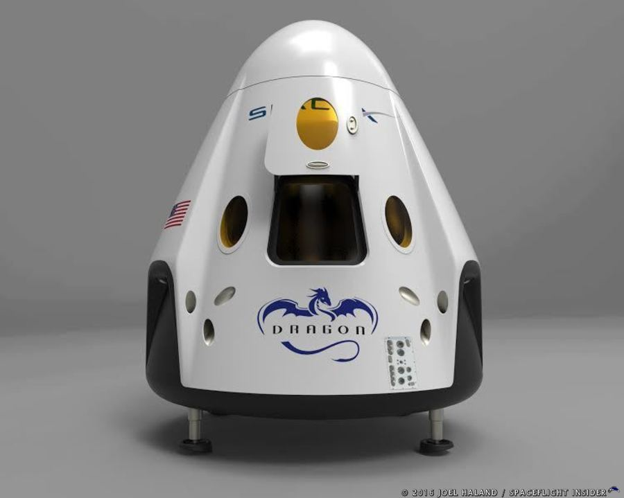

Tu blog de maestro
Este es el titulo atractivo e interesante del post
Y este es el parrafo de inicio donde vamos explicar los cosas increibles que se puden hacer con ramas

los blog son la mejor forma de compartir informacio y tus ideas. Muchos mas que ir a conferecias o salir en YouTube. Excepto si eres un rockstart. pero estadisticamente no lo eres.... por ahora.
sucribite y dale like